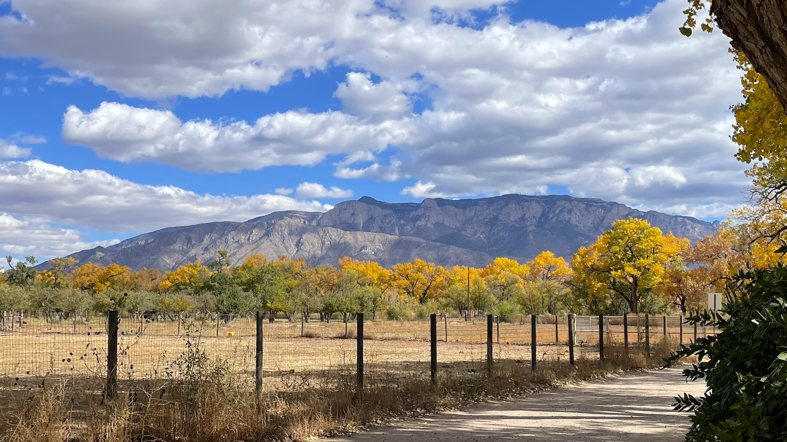

Wednesdays — 10:30 to 11:30am
No need to attend every week; come when you can.
Temporary Location:
May 6 to June 3
1 Camino Los Cerros, Corrales
Normally held at:
Corrales Community Center
4324 Corrales Road, Corrales NM
NE Corner of Village Complex, next door to Senior Center

All are welcome
Beginners or Experienced
Always free of charge
Questions?
contact Brian Taylor, facilitator
at corraleszen@icloud.com
Facebook Group
If you’d like to receive occasional updates and other information
send us an email and we’ll add you to our list.
Donations are gratefully accepted, only to cover monthly expenses such as rent, printing, and advertising (approx. $300 per month). You can contribute cash in the basket, or via PayPal at corraleszen@iCloud.com.
Brian has been practicing Zen for many years: in the 1990’s as a student of Joko Beck in San Diego (see her book Everyday Zen); and from 2014–2024 with Taigen Dan Leighton in Chicago (see his book Zen Questions). Brian took Buddhist vows as a lay practitioner in 2016. He continues as a student of Hogetsu Laurie Belzer, the Guiding Teacher of Ancient Dragon Zen Gate in Chicago, who offers ongoing counsel and guidance to Brian for his facilitation of the Corrales Zen group.
For 30 years, Brian was the senior priest of St. Michael and All Angels Episcopal Church in the North Valley of Albuquerque. During those years he earned a certificate in Spiritual Direction from the Shalem Institute, founded a Contemplative Center, published four books on contemplative theology and practice, and received an honorary doctorate from his seminary in Berkeley for contributions to the field of spirituality.
Since retirement, Brian has devoted himself fully to Zen study and practice. He lives in Corrales with his wife Susanna.
His online newsletter is brianreflects on Substack.
His personal website is brianctaylor.net